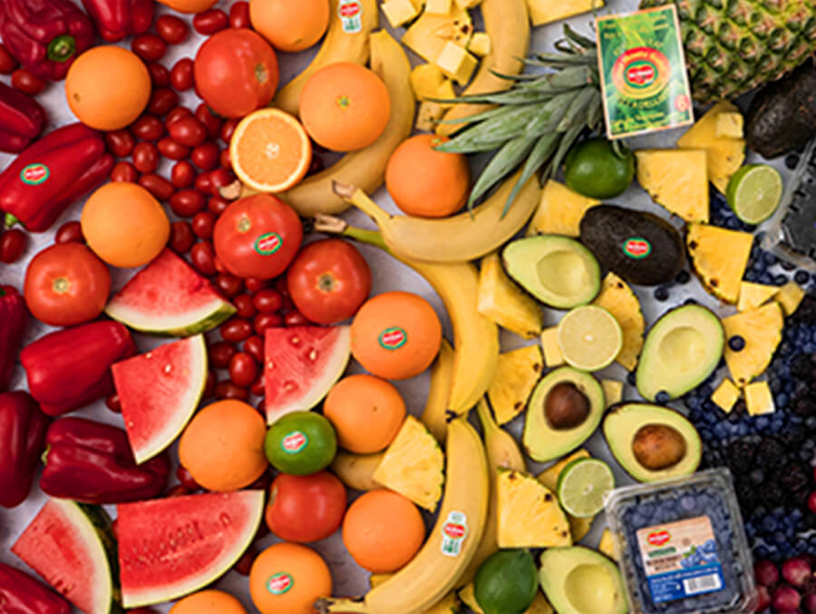

About us!
Bountiful Foods opened its doors only a few years ago, but its journey actually began more than three decades ago when partners Greg Holzman and Steve Akagaki founded Pacific Organic Produce and Purity Organic. Today, Bountiful Foods is a thriving distributor of many different domestic and imported organic fruits, with citrus topping its offerings, followed by mangos, stone fruit, grapes, and cherries, among others.
Visit us!


">